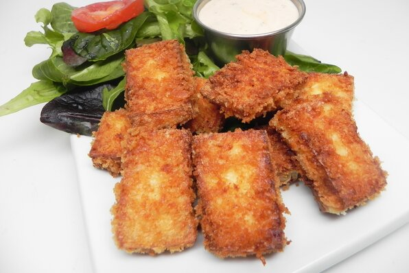

Breaded Tofu Nuggets

Description
These nuggets are a delicious vegan snack or appetizer that can be eaten with a dip of your choice.
Ingredients
- 1 (12 ounce) package extra-firm tofu, drained and frozen
- ¼ cup milk
- 1 tablespoon Dijon mustard
- 1 teaspoon garlic salt
- ½ teaspoon onion powder
- ¼ teaspoon ground black pepper
- ¾ cup panko bread crumbs
- 2 teaspoons vegetable oil
Steps
- Thaw tofu, 8 hours to overnight. Place in a colander with a weight on top to squeeze moisture out.
- Place tofu on a flat work surface and cut into approximately 16 'nuggets.'
- Mix milk, mustard, garlic salt, onion powder, and pepper together in a bowl. Pour break crumbs into a separate bowl. Dip each nugget into the milk mixture and roll into the bread crumbs, coating completely.
- Heat oil in a skillet over medium-high heat. Add nuggets; cook, flipping halfway, until golden brown, about 7 minutes.